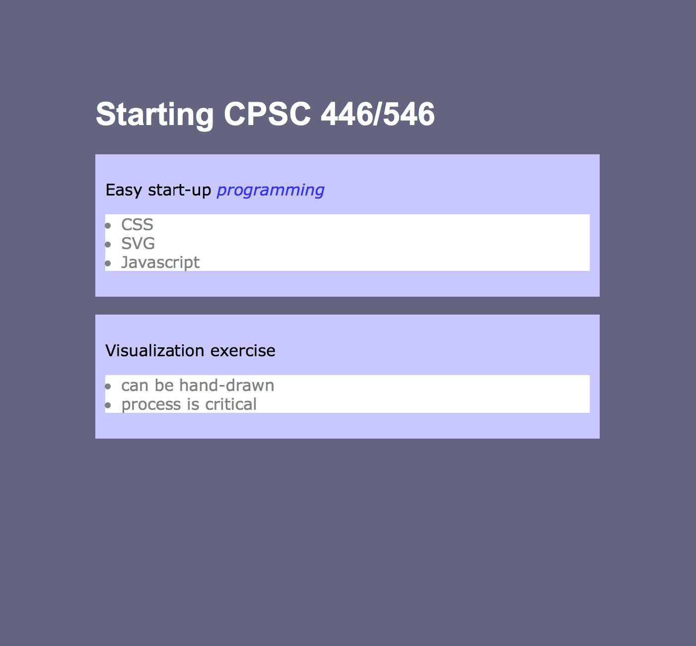
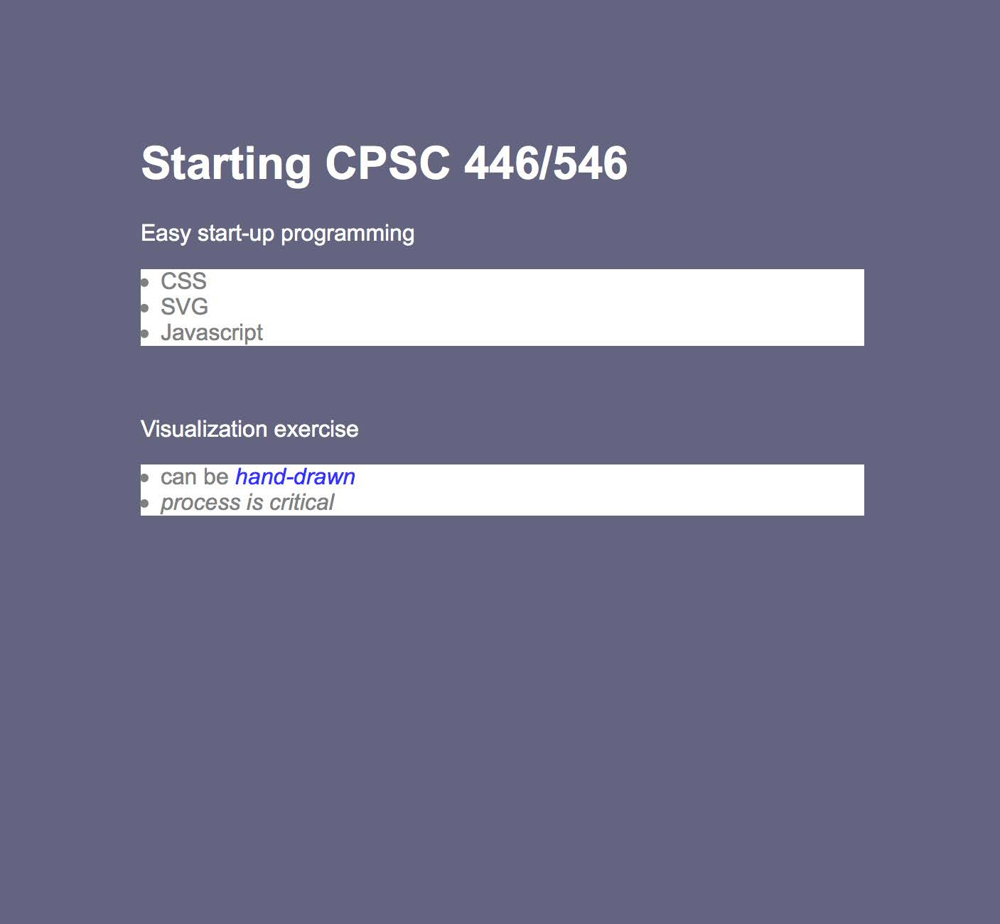
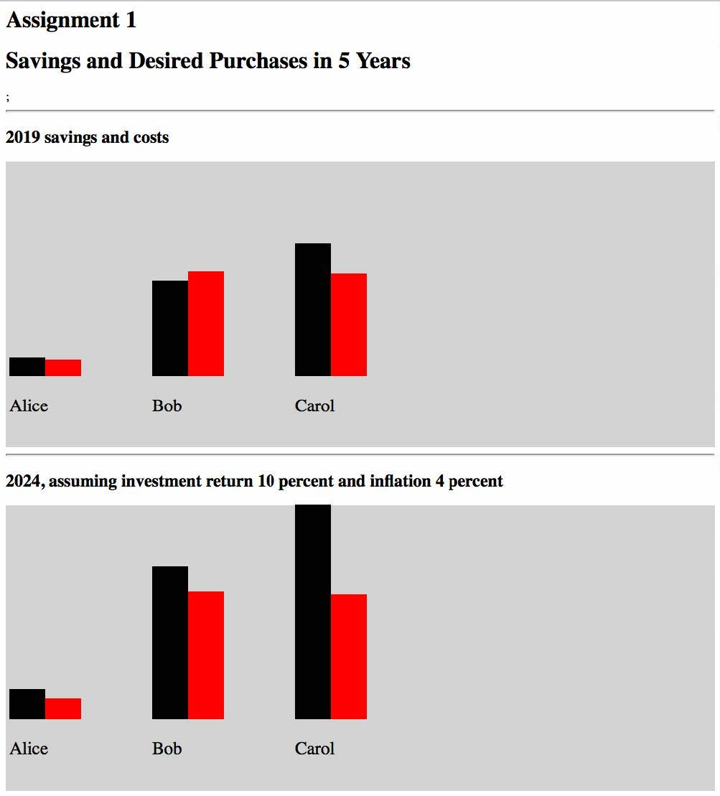

Create a style sheet teststyle.css that will result in the pages shown below for the test files CSSDoc1.html:
And CSSDoc2.html:
Create a file circles.html that draws filled circles with SVG that are similar to the circles scaled with radii 4, 3, 3, 5, 1, 6 as shown in lecture. Use a black rectangle as background. The distribution of the circles and their sizes should be as below, but the exact size of the rectangle and exact locations do not have to be the same. Include stroke outlined characters with your initials (my initials are HR) in the lower right hand corner of the diagram. You do not have to read in a file, all of the positions and radii can be hard-code in the file.
We will use JavaScript to create some SVG code to display a very small dataset. The goal is to use some of the basics of JavaScript. The scenario is that three people (Alice, Bob and Carol) each have some savings to invest, and the names of two things they want to buy. This information is in the array people. The current cost of the things they want is stored in things. They will invest their savings at a rate of return (given in an interactive prompt) and the cost of the things they want to buy will increase at the rate of inflation (given in another interactive prompt.) This visualization will show each person’s savings and the total cost of what they want to buy now, and the same quantities in 5 years, assuming annual compounding. You are given starter code SavingsPurchase-starter.html that builds up a web display of the current savings.
The Yale Office of Institutional Research makes a lot of data available here. They include some visualizations which show enrollment trends, and the impact of WWII. Dataset w034 shows yale college registrations by department. Form two questions that can be examined with the data from w034 (e.g. looking at the composition of course registrations in a division, the change of the different divisions registrations over time, or something more imaginative). Using any method you want (any application like Excel, Mat Lab etc. or by hand) pick out data from w034 and visualize it to address the question. For each of the two questions: (1) Present a visualization and the data selected to make it. (2) Explain how the numbers in the selected data were transformed into visual elements (e.g. positions, sizes, colors etc). (3) Why is the style of visualization (i.e. pie chart, bar chart, scatter plot etc) best for answering this question?